JAVA
JS / ES6

VUEJS

HTML
CSS

PHP
TWIG
RUBY
PYTHON

MONGODB
TINYDB
BOOTSTRAP
NODEJS

JQUERY
SASS

GIT

-
PROGRAMMIERSPRACHEN
Java ist die neuste Sprache die ich aktuell auch noch intensiv lerne. Mit Java und Hyperskill habe ich einen Texteditor, ein De/Encryption Tool oder auch ein Digital Recognition Tool, geschrieben. Außerdem habe ich für meine Bierbrauenden Geschwister einen Bierbot programmiert. Die einzelnen Java Projekten findest du auf GitHub.com.
-
AUSZEICHNUNGSSPRACHEN
HTML5 & CSS3 sind für viele Programmierer der Einstieg. Für mich war es nicht anders. Mit Sass kamen meine ersten Funktionen, Variablen und Schleifen ins Spiel. Auch wenn ich heute mehr Freude an Logik Programmen habe, spiele ich immer wieder gerne mit HTMl & CSS. Bootstrap hilft mir schnell und Projektorientiert zu arbeiten.
-
VERSIONSVERWALTUNG
Git habe ich das erste mal 2016 mit dem GitKraken GUI genutzt. Heute nutze ich Git hauptsächlich direkt aus der Konsole oder der IDE heraus.
-
SKRIPTSPRACHEN
Gestartet habe ich 2015 mit Ruby on Rails für ein Tauschbörsenprojet. Mit PHP und Python habe ich dann unter anderem RaspberryPi Projekte geschrieben. Javascript kam dann mit den es6 Standarts zusammen mit NodeJS und JQuery dazu. Beruflich nutze ich Twig zusammen mit VueJS.
-
DATENBANKEN
Meine ersten Datenbanken waren .txt Dateien. Das ist nicht nur umständlich, sondern auch einfach falsch. Mit TinyDB konnte ich für kleine JS Anwendungen erste echte Datenbanken nutzen. MongoDB habe ich ebenfalls so kennengelernt.